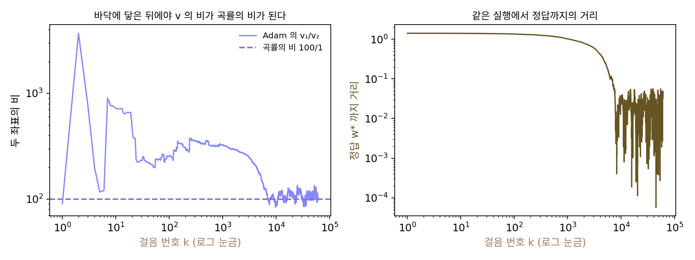

Adam 은 자연 기울기인가: 기울기 제곱 평균과 곡률
AdaGrad 를 처음 그릇에 걸었을 때, 지나온 기울기의 크기로 나누자 곡률이 지워졌다. 그릇의 기울기가 「곡률 × 거리」라서 기울기의 크기 안에 곡률이 들어 있었기 때문이다. 그래서 Adam 의 √v̂를 「대각 곡률의 어림」이라고 부르고, 한 걸음 더 나아가 Adam 을 「피셔 정보의 대각선으로 나눈 자연 기울기」라고 소개하는 글을 자주 본다. 이 말이 맞다면 Adam 은 헤시안 없이 뉴턴법을 흉내 낸 셈이고, 틀리다면 Adam 이 잘 되는 까닭을 다른 데서 찾아야 한다. 기울기 제곱의 평균은 정말 곡률을 닮았을까?
역사: 자연 기울기와 「더 조심스러운」 Adam
자연 기울기는 아마리 슌이치(甘利俊一, Shun’ichi Amari)가 1998년 논문 「자연 기울기는 학습에서 효율적으로 작동한다」에서 다듬은 방법이다. 매개변수를 조금 바꿨을 때 모형이 내놓는 확률분포가 얼마나 달라지는지를 거리로 삼고, 그 거리로 잰 가장 가파른 방향으로 걷는다. 그 거리를 정하는 행렬이 피셔 정보 F이고, 걸음은 기울기에 F⁻¹을 곱한 것이다. 피셔 정보는 「모형이 스스로 뽑은 정답」으로 계산한 로그 가능도(모형이 그 정답에 준 확률의 로그)의 기울기를 제곱해 평균 낸 것으로 쓸 수 있다. 출력이 분산 1인 가우스 분포를 내는 선형 회귀라면 피셔 정보는 입력의 제곱 평균 행렬이 되어, 제곱 오차 손실의 헤시안과 같아진다.
킹마와 바도 Adam 논문의 관련 연구 절에서 이 연결을 적었다. 자연 기울기처럼 Adam 도 기울기에 곱해 방향과 크기를 고쳐 주는 값(전처리)을 쓰는데, 그 전처리는 피셔 정보의 대각 어림에 가깝다는 것이다. 다만 그들은 Adam 이 피셔 대각선의 역이 아니라 그 제곱근의 역을 곱하므로, 보통 자연 기울기보다 「더 조심스럽게(more conservative)」 맞춘다고 덧붙였다. 2019년 프레데리크 쿤스트너(Frederik Kunstner), 루카스 발레스(Lukas Balles), 필리프 헤니히(Philipp Hennig)는 신경 정보 처리 학회(NeurIPS)에 낸 논문 「자연 기울기 하강을 위한 경험적 피셔 어림의 한계」에서 한 걸음 더 들어갔다. 실제 옵티마이저가 모으는 것은 모형이 뽑은 정답이 아니라 데이터의 정답으로 만든 기울기의 제곱이고, 그것은 일반적으로 곡률의 정보를 담지 못한다는 것이다.
곡률이 100배 다른 입력으로 학습하는 Adam
말로 따지기보다 직접 재 보자. 곡률을 미리 아는 학습 문제가 필요하니 선형 회귀를 쓴다. 입력 둘 가운데 x₁은 표준편차 10, x₂는 표준편차 1인 정규분포에서 뽑고, 정답은 y = (표준편차 1인 잡음)이라 가장 좋은 가중치는 w* = (0, 0)이다. 제곱 오차의 절반을 손실로 쓰면 헤시안의 대각선, 곧 두 좌표의 곡률은 (100, 1)이다. 앞에서 써 온 곡률 1과 100인 그릇과 같은 모양을, 이번에는 미니배치(여기서는 표본 하나)의 잡음이 섞인 기울기로 걷는 것이다. Adam(학습률 0.001, 기본값)으로 (1, 1)에서 출발해 6만 걸음 걸으며 v̂를 기록했다(씨앗 고정).
| 걸음 | w | v̂₁ / v̂₂ | 곡률 ÷ √v̂ |
|---|---|---|---|
| 100 | (0.939, 0.973) | 254 | (0.66, 0.11) |
| 1,000 | (0.492, 0.893) | 324 | (0.79, 0.14) |
| 10,000 | (0.010, −0.032) | 91 | (10.4, 0.99) |
| 60,000 | (−0.006, 0.035) | 102 | (9.4, 0.95) |
바닥에서 먼 동안 v̂의 비는 100걸음째 254, 1000걸음째 324로 곡률의 비 100과 맞지 않는다. 이때 기울기는 「곡률 × 바닥까지의 거리」가 대부분이고, v̂는 그 제곱을 기억하므로 곡률의 제곱과 거리의 제곱이 섞여 들어간다. 출발점 (1, 1)에서 데이터 정답으로 만든 기울기 제곱 평균(아래에서 이름을 붙인다)을 직접 계산하면 (30756, 103)이고, 모형이 뽑은 정답으로 만든 피셔 정보는 (102, 1.0)이다. 300배와 100배로 다르다.
바닥에 닿은 뒤(1만 걸음 이후)에는 v̂의 비가 100 근처에 머문다. 기울기의 평균은 0이 되고 남는 것은 잡음뿐인데, 잡음의 크기는 입력의 크기에 비례하므로 그 제곱 평균이 입력의 제곱 평균, 곧 곡률을 따라간다. 이 바닥 근처에서 데이터 정답으로 만든 값은 (100.6, 1.0), 피셔 정보는 (99.9, 0.98)로 거의 같다. 그래도 Adam 은 v̂가 아니라 √v̂로 나눈다. 곡률 100을 √v̂ ≈ 10으로 나누면 10이 남고, 곡률 1을 1로 나누면 1이 남는다. 실제로 걸음을 정하는 「곡률 ÷ √v̂」의 비가 100에서 10으로 줄었다. 조건수를 1로 만든 것이 아니라 그 제곱근으로 줄인 것이다.

이렇게 데이터의 정답으로 계산한 기울기를 제곱해 평균 낸 것을 경험적 피셔 (데이터의 정답으로 만든 기울기 제곱 평균 / empirical Fisher)라 한다. Adam 의 v̂는 경험적 피셔의 대각선을 이동 평균으로 어림한 것이다. 피셔 정보와 경험적 피셔를 식으로 나란히 놓으면 차이는 정답을 어디서 가져오느냐 하나다.
제곱 오차는 분산 1인 가우스 모형의 음의 로그 가능도와 상수만 다르므로, 위 회귀의 기울기가 그대로 로그 가능도의 기울기다. 정리하면 Adam 이 「대각 곡률의 어림」이 되려면 세 가지가 맞아야 한다. 기울기의 평균보다 잡음이 클 만큼 바닥에 가까울 것, 경험적 피셔가 피셔 정보와 비슷할 것, 곡률이 좌표축을 따라 놓여 대각선만으로 충분할 것. 그리고 셋이 다 맞아도 Adam 은 그 어림의 제곱근으로 나눈다. Adam 은 곡률을 흉내 내지만, 반쯤만, 그리고 조건이 맞을 때만 흉내 낸다.
ML에서: 「Adam 은 자연 기울기의 근사」라는 말을 읽을 때
이 설명은 Adam 논문 자신에서 시작했고, 틀렸다고 하기도 맞았다고 하기도 어렵다. 쿤스트너와 동료들이 짚은 것은, 경험적 피셔로 나누는 방법을 자연 기울기나 2차 방법과 같은 이론으로 정당화하는 논증이 흔들린다는 점이다. 실무에서 Adam 이 잘 되는 까닭으로는 좌표마다 걸음 크기를 맞추는 효과(기울기 크기에 무디다는 성질)가 더 직접적이다. 2024년 제러미 번스타인(Jeremy Bernstein)과 레이커 뉴하우스(Laker Newhouse)는 이동 평균을 끈 Adam 이 기울기의 부호만 따라가는 걸음이라는 데서 출발해, Adam 을 「어느 노름으로 잰 가장 가파른 걸음인가」로 다시 읽었다. 그 읽기는 행렬 단위로 걸음을 맞추는 옵티마이저 Muon 으로 이어진다. 대각선 밖의 곡률까지 어림하려는 방법들(K-FAC, Shampoo)도 같은 물음, 곧 「무엇으로 나눠야 곡률을 지우는가」에서 나왔다.
문제 16. 샤워 꼭지
샤워기의 물 온도와 물줄기 세기를 맞춘다. 온도는 예민하고 세기는 둔해서, 불편 = 10 × (온도 오차)² + 0.1 × (세기 오차)²이다. 처음에는 온도 오차도 세기 오차도 1칸이다. 고치는 규칙이 둘 있다. 가: 레버의 두 방향이나 꼭지마다 「움직이면 불편이 줄어드는 빠르기 × 0.05」만큼 움직인다. 나: 레버의 두 방향이나 꼭지마다 최근 빠르기의 평균을 최근 빠르기의 크기로 나눠, 한 번에 0.05칸 남짓씩 움직인다. (가) 레버 하나짜리 수도꼭지는 레버를 좌우로 밀면 온도가, 위아래로 밀면 세기가 바뀐다. 두 오차가 맞는 자리에서 거리 0.05 안에 들기까지 각 규칙으로 몇 번 고쳐야 하는가? (나) 뜨거운 물 꼭지와 찬물 꼭지가 따로 있는 수도꼭지에서는 온도 오차 = (뜨거운 − 찬)/√2, 세기 오차 = (뜨거운 + 찬)/√2이다. 같은 처음 상태(뜨거운 물 꼭지만 1.41칸 더 열려 있다)에서 두 규칙은 몇 번 걸리는가?

나가 언제나 빠르겠죠. 예민한 꼭지든 둔한 꼭지든 같은 폭으로 돌리니까요.

레버에서는 그래. 가는 299번, 나는 23번이야. 가는 온도 오차를 한 번에 없애지만, 세기 오차는 한 번에 0.2 × 0.05 = 1%씩밖에 안 줄어서 기어가.

꼭지가 둘인 수도꼭지에서는요?

가는 똑같이 299번이에요. 그런데 나는 565번… 레버보다 스무 배 넘게 느려요.

뜨거운 물 꼭지 하나만 보면 얼마나 예민하죠? 찬물 꼭지는요?

둘이 똑같아요. 뜨거운 물을 돌려도 찬물을 돌려도 온도와 세기가 함께 바뀌니까요. 꼭지마다 따로 재면 예민함이 같게 나와서, 나 규칙은 두 꼭지를 다르게 다룰 까닭을 못 찾아요. 정말 예민한 쪽은 「두 꼭지를 반대로 돌리는 방향」인데, 꼭지 하나씩만 봐서는 그 방향이 안 보여요.

레버 수도꼭지는 움직이는 두 방향을 사람이 느끼는 온도와 세기에 맞춰 놓은 거네요. 가 규칙은 어느 수도꼭지든 299번인데, 나 규칙은 축이 맞을 때만 빨라요.
문제 17. 돌린 그릇
곡률이 1과 100인 그릇을 각도 θ만큼 돌리고, 출발점도 그릇의 축 좌표로 (1, 1)인 점을 함께 돌린다. (가) θ = 0°, 15°, 30°, 45°에서 헤시안의 대각선과 대각선 밖 값은? (나) 경사하강(학습률 1/100)과 Adam(학습률 0.01)이 바닥까지 거리 0.01 안에 들기까지 각각 몇 걸음인가? (다) Adam 의 학습률을 0.05로 올리면? (풀어 본 뒤 위젯 4의 「문제 17 불러오기」로 확인해 보자.)
그릇을 돌려도 모양은 같으니까 둘 다 걸음 수가 그대로겠죠.
경사하강은 그래. 네 각도 모두 459걸음이야. 기울기가 그릇과 함께 돌아가니까 길도 그대로 돌아갈 뿐이야.
Adam은… 0°에서 223걸음, 15°에서 1971, 30°에서 2657, 45°에서 2820걸음이에요. 열 배 넘게 느려졌어요. 학습률을 0.05로 올려도 24, 454, 674, 732걸음이고요.
45°에서 헤시안의 대각선은 얼마죠?
(50.5, 50.5)예요. 대각선 밖 값이 −49.5고요. 두 좌표의 「대각 곡률」이 똑같아요. 샤워 꼭지랑 같네요. 그러니까 Adam이 좌표마다 따로 나눠 봐야 두 좌표에 같은 수를 나누는 것밖에 안 돼요. 길쭉한 방향이 대각선 쪽에 누워 있는데, 그건 대각선 밖 값에 들어 있어서 Adam의 v에는 안 잡혀요.
그럼 0°에서 Adam 이 잘 됐던 것은 Adam 이 영리해서였을까요, 그릇이 운 좋게 놓여서였을까요?

그릇의 축이 좌표축과 맞아서였어요. AdaGrad를 처음 만든 두치와 동료들이 원래는 행렬 전체를 썼다가 계산 때문에 대각선만 남겼다고 했잖아요. 그때 버린 게 바로 이 대각선 밖 값이에요. 선형대수에서 대각화가 좌표를 고유벡터에 맞출 때만 되는 것과 같네요.
신경망의 손실이 좌표축에 맞춰 놓여 있을 리는 없으니까, Adam이 곡률을 얼마나 잡느냐는 그때그때 다르겠네요. 엑셀에서 열마다 따로 정렬하면 행이 뒤섞이는 거랑 비슷해요. 열끼리 묶여 있는 정보를 버리는 거니까요.
문제 18. Adam 은 피셔로 나누는가
입력이 x = (2, 0.5) 하나뿐인 선형 모델 ŷ = w₁x₁ + w₂x₂가 분산 1인 가우스 분포를 낸다. 지금 오차가 ŷ − y = 0.2라서 기울기는 g = 0.2x = (0.4, 0.1)이고, 걸음마다 같은 기울기가 나온다고 하자. (가) 이동 평균이 다 쌓인 뒤 Adam 의 한 걸음은? (분모의 ε는 무시한다.) (나) Adam 이 나누는 값에서 제곱근을 빼고 기울기 제곱 g²로 나누면 걸음은 어떻게 되는가? 오차가 0.02로 줄면? (다) 이 모델의 피셔 정보의 대각선은 무엇이고, 그것으로 나눈 걸음은?
Adam의 v는 기울기 제곱의 평균이고, 피셔 정보도 기울기 제곱의 평균이잖아요. 그러니까 v로 나누는 Adam이 대각 피셔로 나눈 자연 기울기 맞죠.
(가)부터 숫자로 걸어 봐요.
기울기가 늘 같으니 m̂ = g = (0.4, 0.1), v̂ = g² = (0.16, 0.01)이에요. 걸음은 −η × (0.4/0.4, 0.1/0.1) = −η × (1, 1). 두 좌표가 똑같이 η만큼 움직여요.
제곱근이 있어서 그래. √v̂는 |g|라서 결국 기울기의 부호만 남아. 자연 기울기라면 제곱근 없이 나눠야 하잖아.

그럼 g²로 나누면 (0.4/0.16, 0.1/0.01) = (2.5, 10)이요. 오차가 0.02로 줄면 기울기가 열 배 작아지니까 (25, 100)… 바닥에 다가갈수록 걸음이 열 배씩 커져요. 이러면 바닥에서 튀어 나가겠는데요.
피셔 정보의 정의에서 제곱하는 기울기는 어떤 정답으로 계산하죠?

모형이 낸 분포에서 뽑은 정답이에요. 데이터의 정답이 아니라요. 분산 1인 가우스에서 뽑은 정답은 평균 둘레로 분산 1만큼 흩어지니까, 피셔는 xxᵀ이고 대각선은 (4, 0.25)예요. 오차와 상관이 없어요. 이걸로 나누면 (0.4/4, 0.1/0.25) = (0.1, 0.4). 오차가 0.02면 (0.01, 0.04)로 오차를 따라 같이 작아지고요.
셋이 다 다르네요. Adam은 (1, 1), 데이터의 정답으로 만든 g²는 (2.5, 10), 피셔 정보는 (0.1, 0.4).

데이터의 정답으로 만든 기울기 제곱 평균이 경험적 피셔였죠. 이 문제처럼 기울기가 한결같으면 경험적 피셔는 오차의 제곱을 따라 줄고, 피셔 정보는 입력만 보고 그대로 있어요. 둘이 비슷해지는 것은 바닥 근처에서 오차가 잡음뿐일 때예요. 같은 이름 「기울기 제곱의 평균」 안에 이렇게 다른 양이 들어 있어요.
강의 계획서에 「상대평가」라고 적혀 있어도 실제로 순위로 매기는지 점수 구간으로 매기는지는 계산식을 봐야 아는 거랑 같네요. 이름보다 식을 먼저 확인해야겠어요.